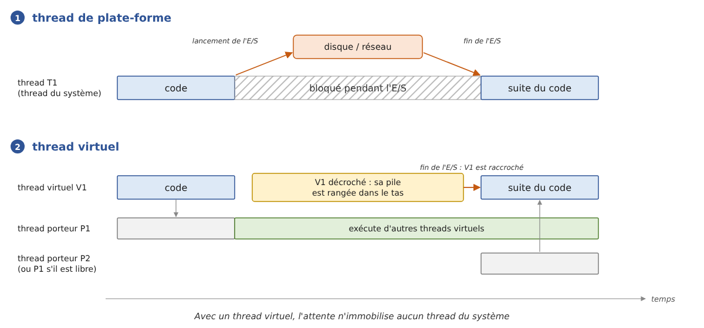

9. La programmation asynchrone
Le chapitre précédent a présenté les threads : on peut faire exécuter plusieurs morceaux de code « en même temps », les synchroniser, et confier des tâches à un pool de threads par l'intermédiaire d'un exécuteur ([ExecutorService]). Ce chapitre traite d'une question voisine mais différente : comment écrire un programme qui attend beaucoup (le disque, le réseau, une base de données) sans immobiliser de threads pendant ces attentes.
Java n'a pas de mots clés du langage pour cela (d'autres langages, comme C# ou JavaScript, ont les mots clés [async] et [await]). Il apporte deux réponses, qui se complètent et que ce chapitre présente toutes les deux :
- la classe [CompletableFuture<T>] (Java 8, enrichie depuis) représente une opération en cours dont on compose la suite par des méthodes de rappel : « quand le résultat sera là, fais ceci, puis cela » ([thenApply], [thenCompose], [thenCombine], [allOf]…). Aucun thread n'attend : c'est la fin de l'opération qui déclenche la suite ;
- les threads virtuels (« virtual threads », Java 21) permettent au contraire d'écrire du code bloquant, séquentiel, qui se lit de haut en bas : lorsqu'un thread virtuel attend une entrée / sortie, la JVM le décroche du thread du système qui l'exécutait (son thread porteur, « carrier thread ») et libère ce dernier pour un autre thread virtuel. On peut ainsi avoir des centaines de milliers de threads virtuels pour quelques threads du système. C'est la réponse moderne de Java au problème que d'autres langages résolvent avec [async] / [await].
Ces outils sont aujourd'hui partout : les chapitres suivants les retrouveront pour accéder aux bases de données, écrire des serveurs TCP qui servent chaque client par un thread virtuel, des clients web avec [java.net.http.HttpClient] et des services web avec Spring Boot.
Tous les exemples du chapitre sont des fichiers source compacts ([Async01.java], [Async02.java]…) que l'on exécute avec [java AsyncNN.java] dans le dossier [09-async]. Beaucoup d'entre eux mesurent des durées avec [System.nanoTime()] : les millisecondes affichées varient d'une exécution à l'autre et d'une machine à l'autre (les exemples ont été exécutés sur une machine à 2 processeurs). Ce sont les ordres de grandeur qui comptent : 1 seconde ou 10 secondes, 300 ms ou 0 ms.
9.1. Pourquoi l'asynchronisme
9.1.1. Les opérations qui attendent
Un programme fait deux sortes de travail :
- du calcul, qui occupe le processeur : trier une liste, calculer un impôt, analyser un texte ;
- des entrées / sorties (E/S), qui consistent pour l'essentiel à attendre un périphérique : lire un fichier sur le disque, envoyer une requête à un serveur web et attendre sa réponse, exécuter une requête SQL sur un serveur de bases de données.
Les ordres de grandeur sont très différents. Un processeur exécute quelques milliards d'instructions par seconde. Une lecture sur un disque SSD prend de l'ordre d'un dixième de milliseconde, un aller-retour sur un réseau local une fraction de milliseconde, un aller-retour vers un serveur situé à l'autre bout du pays quelques dizaines de millisecondes, une requête SQL un peu complexe parfois plusieurs secondes. Pendant ces attentes, le processeur aurait pu exécuter des millions d'instructions.
Lorsqu'un programme lit une ligne sur une connexion réseau avec une méthode bloquante, le thread qui exécute cette lecture est bloqué : il ne fait rien, mais il existe. Un thread Java « classique », que l'on appelle aujourd'hui thread de plate-forme (« platform thread »), est un thread du système d'exploitation : il occupe de la mémoire (sa pile, de l'ordre du mégaoctet), il est connu du système, et surtout il n'est plus disponible pour faire autre chose. Ce n'est pas gênant dans un petit programme console qui fait une chose à la fois. Cela l'est beaucoup plus dans deux situations :
- dans un serveur : chaque client servi par un thread bloqué immobilise ce thread. Si le pool de threads du serveur a N threads et que les N threads font une opération bloquante, il n'y a plus de thread disponible pour un nouveau client. Un serveur moderne sert des milliers de requêtes simultanées : c'est possible parce que ses attentes n'immobilisent pas de thread du système ;
- dans une interface graphique : un seul thread, le thread de l'interface (l'« Event Dispatch Thread » de Swing, le « JavaFX Application Thread »), traite les clics et redessine les fenêtres. S'il est bloqué par un téléchargement, la fenêtre se fige.
L'asynchronisme consiste à lancer l'opération d'E/S, à libérer le thread du système pendant qu'elle se déroule (le matériel et le système d'exploitation n'ont pas besoin de lui pour transférer les données), puis à reprendre le travail lorsque l'opération est terminée, éventuellement sur un autre thread du système :

- en [1], le thread de plate-forme T1 lance l'E/S et reste bloqué jusqu'à sa fin ;
- en [2], le thread virtuel V1 lance l'E/S ; la JVM le décroche de son thread porteur P1, qui peut aussitôt exécuter d'autres threads virtuels. Lorsque l'E/S se termine, la JVM raccroche V1 à un thread porteur libre, P2 (qui peut d'ailleurs être P1), et V1 continue son exécution juste après l'instruction bloquante, comme si de rien n'était.
Le programme [Async01.java] mesure la différence sur 100 opérations qui attendent chacune une seconde (l'attente simule une E/S). Il utilise des instructions que nous expliquerons dans la suite du chapitre ([Executors.newVirtualThreadPerTaskExecutor], [CompletableFuture]) : on s'intéresse ici surtout aux résultats.
Résultats :
Commentaires :
- lignes 12-22 : la solution la plus simple, un thread de plate-forme par opération. [Thread.ofPlatform().start(tâche)] (Java 21) crée et démarre un thread, comme [new Thread(tâche).start()]. Chaque thread exécute [Thread.sleep(1000)] : il est bloqué pendant une seconde. Les 100 attentes se déroulent en même temps et l'ensemble dure bien une seconde (ligne 4 des résultats), mais au prix de 100 threads du système supplémentaires : la JVM en compte 106 (ligne 3). Avec 10 000 opérations, il faudrait 10 000 threads du système ;
- lignes 24-32 : les opérations sont confiées à un pool de 10 threads ([Executors.newFixedThreadPool(10)]), une taille raisonnable pour des calculs. Mais ici ses threads ne calculent pas : ils dorment. Les opérations attendent un thread libre, par vagues de 10, et l'ensemble dure… dix secondes (ligne 6). C'est ce qu'on appelle la famine du pool de threads (« thread pool starvation »), le défaut le plus fréquent des serveurs qui mélangent pool de threads et E/S bloquantes. La méthode [close()] d'un exécuteur (Java 19), appelée à la sortie du [try], refuse les nouvelles tâches et attend la fin de celles qui ont été soumises ;
- lignes 34-42 : un thread virtuel par opération. [Executors.newVirtualThreadPerTaskExecutor()] (Java 21) rend un exécuteur qui crée un nouveau thread virtuel pour chaque tâche soumise. Le code des tâches est le même qu'à l'étape 1 : un [Thread.sleep(1000)] bloquant. Mais un thread virtuel bloqué n'immobilise pas de thread du système : la JVM le décroche de son thread porteur. Les 100 attentes durent ensemble une seconde (ligne 8), et la JVM ne compte que 10 threads du système (ligne 7) : ses threads de service, et les deux threads porteurs, un par processeur, qui ont exécuté les 100 threads virtuels. Les threads virtuels ne figurent pas dans ce décompte : ce sont des objets de la JVM, pas des threads du système ;
- lignes 44-52 : la même attente sans aucun thread qui attend. [new CompletableFuture<Void>()] crée une opération « en cours », et [completeOnTimeout(valeur, délai, unité)] (Java 9) demande qu'elle soit terminée avec la valeur indiquée au bout du délai. Une seule minuterie de la JVM gère les 100 délais. [CompletableFuture.allOf(...)] rend une opération qui se termine quand toutes les autres le sont, et [join()] attend sa fin. L'ensemble dure une seconde (ligne 10), avec un seul thread de plus qu'à l'étape 3, celui de la minuterie (ligne 9) ;
- lignes 55-62 : [Thread.sleep] peut lancer l'exception contrôlée [InterruptedException] si le thread est interrompu pendant son sommeil (nous en reparlerons au paragraphe sur l'annulation) ; la méthode [attendre] l'intercepte pour que les lambdas des lignes 16, 28 et 38 n'aient pas à la traiter ;
- lignes 64-71 : [ManagementFactory.getThreadMXBean().getThreadCount()] donne le nombre de threads de plate-forme vivants de la JVM. La classe [ManagementFactory] appartient au module [java.management] : un fichier source compact n'importe automatiquement que le module [java.base], d'où l'importation de la ligne 3.
Retenons la leçon : pour attendre, il ne faut pas bloquer de thread du système. L'asynchronisme ne rend pas une E/S plus rapide ; il permet d'en mener beaucoup de front avec peu de threads du système, et de garder disponibles les threads dont l'application a besoin. Java offre pour cela deux chemins : composer des [CompletableFuture] (étape 4), ou écrire du code bloquant ordinaire exécuté par des threads virtuels (étape 3).
9.1.2. Plusieurs modèles successifs
Java a proposé plusieurs façons d'écrire du code qui attend sans bloquer. On rencontre encore les plus anciennes dans du code existant, il est donc utile de les reconnaître.
Modèle | Apparition | Principe |
[Future] et exécuteurs | Java 5 (2004) | [ExecutorService.submit] confie une tâche à un pool de threads et rend un [Future<T>], qui représente le résultat à venir. Mais la seule façon d'obtenir ce résultat est d'attendre, en bloquant, avec [get()]. |
méthodes de rappel de NIO.2 | Java 7 (2011) | les canaux asynchrones ([AsynchronousSocketChannel], [AsynchronousFileChannel]) lancent une opération et reçoivent un objet de rappel ([CompletionHandler]) dont la méthode [completed] ou [failed] est appelée par un thread d'un pool à la fin de l'opération. |
[CompletableFuture] | Java 8 (2014) | un [Future] que l'on peut terminer soi-même et dont on compose la suite par des méthodes de rappel ([thenApply], [thenCompose], [exceptionally]…) ; les flux réactifs [java.util.concurrent.Flow] (Java 9) en sont le prolongement pour des suites de valeurs. Les bibliothèques réactives (Project Reactor, utilisé par Spring WebFlux, RxJava) reposent sur les mêmes idées. |
threads virtuels | Java 21 (2023) | du code bloquant ordinaire, exécuté par des threads virtuels : la JVM libère le thread du système pendant les attentes. C'est le modèle recommandé aujourd'hui pour les nouvelles applications. |
concurrence structurée | aperçu (« preview ») de Java 21 à Java 25 | [StructuredTaskScope] organise un groupe de sous-tâches exécutées par des threads virtuels comme un bloc de code, avec une gestion commune des erreurs et de l'annulation (voir la fin du chapitre). |
Les méthodes de rappel ont un défaut : le code est découpé en morceaux. Ce qui s'écrit naturellement « se connecter, puis lire, puis afficher » devient une méthode qui lance la connexion, une méthode de rappel qui lance la lecture, une autre méthode de rappel qui affiche ; les variables doivent être partagées entre ces méthodes, les exceptions sont récupérées à des endroits différents, et une simple boucle (« lire tant qu'il y a des données ») devient une méthode de rappel qui se relance elle-même. [CompletableFuture] rend ce découpage plus lisible en enchaînant les étapes ; les threads virtuels le font disparaître : le code asynchrone a la forme du code synchrone, parce qu'il est du code synchrone.
Le programme [Async02.java] écrit le même client TCP selon les deux modèles extrêmes : avec les méthodes de rappel de NIO.2, puis avec du code bloquant exécuté par un thread virtuel. Il contient aussi un petit serveur, exécuté par un thread, qui répond à deux clients (la programmation réseau sera étudiée en détail au chapitre 12 ; il suffit ici de savoir qu'un client se connecte au serveur et lit le message que celui-ci lui envoie).
Résultats :
Commentaires :
- lignes 8-23 : le serveur. Il écoute sur le port 27500 de la machine locale ([InetAddress.getLoopbackAddress()], c'est-à-dire 127.0.0.1), accepte deux connexions l'une après l'autre et envoie à chaque client, après une demi-seconde, un message de bienvenue. Il est exécuté par un thread de plate-forme nommé [serveur]. La forme [try (ecoute)] (Java 9) fermera à la fin du bloc le [ServerSocket] déclaré à la ligne 9 ;
- lignes 26-32 : le client écrit avec des méthodes de rappel :
- ligne 27 : un [AsynchronousSocketChannel] est un canal TCP dont les opérations sont asynchrones ;
- ligne 29 : [connect] lance la connexion et rend la main immédiatement (ligne 3 des résultats). Ses deux derniers paramètres sont un objet quelconque que la méthode de rappel recevra (ici le canal lui-même) et l'objet de rappel, de type [Connecte] ;
- ligne 32 : le thread principal n'a plus rien à faire. Pour que le programme ne se termine pas avant la fin de l'échange, il attend un signal que donnera la dernière méthode de rappel : un [CountDownLatch] initialisé à 1 (ligne 5), dont la méthode [await] bloque le thread qui l'appelle jusqu'à ce qu'un autre thread appelle sa méthode [countDown] ;
- lignes 50-64 : l'objet de rappel de la connexion implémente l'interface [CompletionHandler<V, A>], où [V] est le type du résultat de l'opération ([Void] pour une connexion) et [A] celui de l'objet transmis. Sa méthode [completed] est appelée si l'opération réussit, sa méthode [failed] si elle échoue. Une fois connecté, on lance la lecture avec [read] en indiquant un second objet de rappel, de type [Recu] (ligne 56) ;
- lignes 66-85 : l'objet de rappel de la lecture reçoit le nombre d'octets lus, affiche le message, ferme le canal et débloque le thread principal. Les classes [Connecte] et [Recu] sont des classes internes de la classe implicite du fichier compact : elles ont accès à ses champs [tampon] et [fin] et à sa méthode [afficher] ;
- les résultats montrent que les méthodes de rappel sont exécutées par d'autres threads que le thread principal (des threads du pool de la JVM consacré aux canaux asynchrones, nommés [InnocuousThread-N]) ;
- lignes 34-46 : le même client, écrit avec un [Socket] ordinaire et des opérations bloquantes ([new Socket(...)] se connecte, [read] attend les données), exécuté par un thread virtuel créé par [Thread.ofVirtual().start(tâche)] (Java 21). Le code se lit de haut en bas comme du code synchrone, les variables sont des variables locales ordinaires, les erreurs sont traitées par un seul [try / catch], il n'y a ni méthode de rappel ni signal à gérer ;
- lignes 87-92 : chaque affichage est préfixé par le thread qui l'exécute. Pour un thread virtuel, [toString()] rend une description de la forme [VirtualThread[#28]/runnable@ForkJoinPool-1-worker-1] : le numéro du thread virtuel, son état et son thread porteur actuel. Les lignes 6 et 7 des résultats montrent le même thread virtuel n° 28, porté d'abord par [worker-1] puis par [worker-2] : pendant l'attente de la réponse du serveur, il a été décroché de son premier porteur et raccroché ensuite à un autre.
Il n'est pas nécessaire de retenir l'interface [CompletionHandler]. Si l'on doit utiliser une API qui ne propose que ce modèle, on la transforme en [CompletableFuture] (nous le ferons dans [Async17.java]), ou l'on utilise sa version bloquante sur un thread virtuel.
9.2. Les opérations à venir : Future et CompletableFuture
Un [Future<T>] (interface du paquetage [java.util.concurrent], Java 5) est un objet qui représente le résultat, de type [T], d'une opération en cours ou terminée. Le chapitre précédent l'a rencontré : c'est ce que rend la méthode [submit] d'un exécuteur. On peut l'interroger (est-elle terminée ? a-t-elle réussi ?), l'annuler ([cancel]) et attendre son résultat ([get]), mais rien d'autre : la seule façon d'exploiter le résultat est de bloquer un thread jusqu'à ce qu'il soit là.
La classe [CompletableFuture<T>] (Java 8) implémente [Future<T>] et ajoute deux possibilités essentielles :
- on peut la terminer soi-même, avec un résultat ([complete]) ou une exception ([completeExceptionally]) ;
- on peut lui attacher la suite du traitement, une fonction qui sera exécutée lorsque le résultat sera disponible ([thenApply], [thenAccept], [thenCompose]…), ce qui produit un nouveau [CompletableFuture]. On construit ainsi des chaînes d'opérations sans qu'aucun thread n'attende. Ces méthodes sont déclarées par l'interface [CompletionStage<T>], que [CompletableFuture] implémente également.
Un [CompletableFuture] n'est pas un thread. Il peut représenter un traitement exécuté par un thread d'un exécuteur (c'est le cas de ceux que crée [supplyAsync]), mais beaucoup ne sont exécutés par aucun thread : celui de l'étape 4 de [Async01.java] est simplement « terminé » par une minuterie au bout d'une seconde, celui que rend [HttpClient.sendAsync] est terminé lorsque la réponse du serveur est arrivée. C'est une promesse de résultat.
Le programme [Async03.java] présente les principales façons de créer, d'interroger et d'attendre un [CompletableFuture] :
Résultats :
Commentaires :
- lignes 4-11 : [CompletableFuture.supplyAsync(fournisseur)] confie une fonction sans paramètre ([Supplier<T>]) à un exécuteur et rend aussitôt un [CompletableFuture<T>] qui représente son exécution. La fonction rend un [long], on obtient donc un [CompletableFuture<Long>]. Sans exécuteur explicite, c'est le pool commun de la JVM, [ForkJoinPool.commonPool()], qui exécute la fonction ; nous verrons plus loin comment choisir l'exécuteur. Pour un traitement sans résultat ([Runnable]), on utilise [runAsync], qui rend un [CompletableFuture<Void>] ;
- ligne 12 : la méthode [state()] (Java 19) donne l'état de l'opération : [RUNNING] (en cours), [SUCCESS] (terminée avec succès), [FAILED] (terminée sur une exception) ou [CANCELLED] (annulée). Ce sont les constantes de l'énumération [Future.State] ; les trois dernières sont des états finaux : une opération terminée ne change plus d'état ;
- ligne 14 : [join()] attend la fin de l'opération et rend son résultat. Comme [Thread.join] au chapitre précédent, c'est une attente bloquante : le thread courant est immobilisé (le thread principal ici, ce qui ne gêne pas un petit programme console) ;
- lignes 17-22 : un [CompletableFuture] créé « en cours » par son constructeur et terminé par une minuterie au bout de 300 ms ([completeOnTimeout], Java 9). Aucun thread n'est occupé pendant ce temps : c'est l'équivalent asynchrone de [Thread.sleep(300)]. Son type est [CompletableFuture<Void>] : il ne porte pas de résultat ([Void] est la classe qui correspond à [void] ; sa seule valeur est [null]) ;
- lignes 25-28 : [completedFuture(42)] rend un [CompletableFuture] déjà terminé dont le résultat est 42, [failedFuture(exception)] (Java 9) un [CompletableFuture] déjà en échec. Ils servent lorsqu'une méthode doit rendre un [CompletableFuture] mais a déjà le résultat (une valeur en cache, par exemple) ou sait déjà qu'elle échoue. [resultNow()] et [exceptionNow()] (Java 19) rendent le résultat ou l'exception d'une opération terminée, sans attendre (elles lancent une [IllegalStateException] si l'opération n'est pas dans l'état voulu) ;
- lignes 31-37 : une opération dont la fonction lance une exception se termine dans l'état [FAILED]. L'exception est conservée dans le [CompletableFuture], et [join()] lance une [CompletionException] (une exception non contrôlée) dont la cause ([getCause()]) est l'exception d'origine, ici une [NumberFormatException] ;
- lignes 40-45 : [get()], la méthode héritée de l'interface [Future], attend elle aussi en bloquant, mais enveloppe l'exception dans une [ExecutionException], une exception contrôlée, et peut aussi lancer une [InterruptedException], contrôlée elle aussi : l'appel est donc placé dans un [try / catch] qui intercepte la première, et la méthode [main] déclare la seconde (ligne 2). [join()] est plus commode dans le code qui manipule des [CompletableFuture] ; [get()] est la seule disponible sur un simple [Future], et il en existe une version avec délai, [get(délai, unité)] ;
- lignes 48-50 : une continuation. [f2.thenApply(fonction)] rend un nouveau [CompletableFuture] qui sera terminé avec le résultat de la fonction appliquée au résultat de [f2], lorsque [f2] sera terminé. Ici la fonction ignore son paramètre ([null]) et rend 42 : on obtient un [CompletableFuture<Integer>]. [thenAccept] attache une fonction qui consomme le résultat sans en produire ([Consumer<T>]) et rend un [CompletableFuture<Void>]. Si l'opération d'origine échoue, la continuation n'est pas exécutée et l'échec se propage le long de la chaîne ;
- lignes 53-55 : les méthodes booléennes [isDone()] (terminée, quelle que soit la façon), [isCompletedExceptionally()] (terminée sur une exception ou annulée) et [isCancelled()] (annulée).
Les méthodes de [CompletableFuture] sont nombreuses (plus de cinquante). Le tableau suivant présente celles que nous utiliserons :
Méthode | Rôle |
[supplyAsync(f)], [runAsync(r)] | exécuter une fonction (avec ou sans résultat) par un exécuteur |
[completedFuture(v)], [failedFuture(e)] | créer une opération déjà terminée, avec succès ou en échec |
[complete(v)], [completeExceptionally(e)] | terminer soi-même une opération |
[thenApply(f)] | transformer le résultat : [T → U] |
[thenAccept(c)], [thenRun(r)] | consommer le résultat, ou exécuter une action après l'opération |
[thenCompose(f)] | enchaîner une autre opération asynchrone : [T → CompletableFuture<U>] |
[thenCombine(autre, f)] | combiner les résultats de deux opérations menées de front |
[allOf(...)], [anyOf(...)] | attendre toutes les opérations, ou la première terminée |
[exceptionally(f)], [handle(f)], [whenComplete(c)] | traiter ou observer un échec |
[orTimeout(...)], [completeOnTimeout(...)] | limiter la durée d'une opération |
[join()], [get()] | attendre le résultat en bloquant le thread courant |
Les méthodes [thenXxx], [handle] et [whenComplete] existent aussi en version [thenXxxAsync] : nous verrons la différence au paragraphe « Quel thread exécute la suite ? ».
9.3. Les méthodes asynchrones
9.3.1. Première façon : rendre un CompletableFuture
En Java, une méthode asynchrone est simplement une méthode qui lance une opération et rend aussitôt, sans attendre, un [CompletableFuture] qui la représente :
- [CompletableFuture<Void>] si l'opération ne rend pas de résultat ;
- [CompletableFuture<T>] si elle rend un résultat de type [T].
Le langage n'impose aucune convention de nommage. Les bibliothèques de Java suffixent souvent ces méthodes par [Async] ([sendAsync], [supplyAsync]), mais ce n'est pas une règle : le type de retour suffit à les reconnaître.
Le programme [Async04.java] prépare un café et compte des sucres :
Résultats :
Commentaires :
- lignes 40-43 : la méthode [delai] est l'équivalent asynchrone de [Thread.sleep] : elle rend un [CompletableFuture<Void>] qui sera terminé au bout du délai, sans occuper de thread. Nous l'utiliserons dans beaucoup d'exemples pour simuler une E/S ;
- lignes 17-24 : une opération sans résultat. La méthode affiche un premier message, puis décrit l'enchaînement des étapes et rend aussitôt le [CompletableFuture] final : c'est pourquoi la ligne 4 des résultats apparaît juste après la ligne 3, et non une seconde et demie plus tard. Les étapes s'exécuteront plus tard, chacune lorsque la précédente sera terminée :
- ligne 21 : [thenRun(action)] exécute une action quand l'opération précédente est terminée ;
- ligne 22 : [thenCompose(fonction)] enchaîne une autre opération asynchrone : la fonction rend elle-même un [CompletableFuture] (ici un nouveau délai de 500 ms), et le [CompletableFuture] rendu par [thenCompose] ne sera terminé que lorsque cette seconde opération le sera. Avec [thenApply], on aurait obtenu un [CompletableFuture<CompletableFuture<Void>>], terminé dès le début du second délai : [thenCompose] est à [thenApply] ce que [flatMap] est à [map] dans l'API Stream ;
- lignes 27-38 : une opération qui rend un entier. Une boucle ne peut pas « attendre » à chaque tour : elle construit la chaîne des étapes, chaque tour ajoutant un délai et un affichage à la chaîne existante, en partant d'un [CompletableFuture] déjà terminé (ligne 29). Toute la chaîne est construite en quelques microsecondes, puis se déroule ensuite au fil des délais. La variable [numero] (ligne 32) est nécessaire car une lambda ne peut utiliser qu'une variable locale effectivement finale, ce que n'est pas [i]. À la fin, [thenApply] transforme la chaîne en un [CompletableFuture<Integer>] dont le résultat est le nombre de sucres ;
- lignes 6-10 : le programme principal appelle les deux méthodes. Il récupère deux [CompletableFuture] et continue son exécution. Les deux opérations progressent ensuite « en même temps » : les sucres sont comptés (lignes 7-9 des résultats) pendant que la machine chauffe ;
- ligne 12 : [preparation.thenCombine(comptage, fonction)] rend un [CompletableFuture] terminé lorsque les deux opérations le sont, avec le résultat de la fonction appliquée à leurs deux résultats : ici on garde le nombre de sucres. [join()] attend ce résultat. Le café est prêt au bout de 1,5 seconde, la durée de la plus longue des deux opérations, et non au bout de 2,1 secondes (1,5 + 3 × 0,2).
On voit les qualités et les limites de cette façon de faire. Aucun thread n'attend : les étapes sont exécutées par le thread de la minuterie, au fil des délais. Mais le code ne se lit plus comme une suite d'instructions : la boucle de [compterSucres] ne fait pas ce qu'une boucle fait d'habitude (elle construit une chaîne au lieu d'exécuter des tours), et un simple [if] ou un [try / catch] au milieu des étapes demande des méthodes dédiées. C'est le prix à payer quand le langage n'offre pas de mots clés comme [await].
9.3.2. Seconde façon : du code bloquant sur des threads virtuels
Les threads virtuels permettent d'écrire les mêmes méthodes comme des méthodes ordinaires, bloquantes. Le programme [Async05.java] prépare le même café :
Résultats :
Commentaires :
- lignes 20-37 : les deux opérations sont des méthodes ordinaires : [preparerCafe] ne rend rien ([void]), [compterSucres] rend un [int]. Les attentes sont des [Thread.sleep] bloquants, la boucle est une vraie boucle. Rien, dans ces méthodes, n'indique qu'elles seront exécutées de façon concurrente : on pourrait les appeler directement ;
- lignes 39-48 : la méthode [dormir] appelle [Thread.sleep] et transforme une éventuelle [InterruptedException] (exception contrôlée) en [CancellationException] (non contrôlée), après avoir rétabli l'indicateur d'interruption du thread : c'est la règle quand on intercepte une [InterruptedException] sans la propager (nous y reviendrons au paragraphe sur l'annulation) ;
- ligne 6 : un exécuteur qui crée un thread virtuel pour chaque tâche. Il est déclaré dans un [try] avec ressource : sa méthode [close()] attendra la fin de toutes les tâches ;
- lignes 8 et 11 : [submit] confie chaque méthode à un nouveau thread virtuel et rend un [Future]. La référence de méthode [this::preparerCafe] est un [Runnable] (la méthode ne rend rien), d'où un [Future<?>] ; la lambda [() -> compterSucres(3)] est un [Callable<Integer>], d'où un [Future<Integer>] ;
- lignes 14-15 : le programme principal attend les deux résultats avec [get()]. C'est une attente bloquante du thread principal, sans conséquence ici ;
- les résultats sont les mêmes qu'avec [Async04.java] : 1,5 seconde au total, les sucres comptés pendant que la machine chauffe. Pendant les attentes, aucun thread du système n'est bloqué : les deux threads virtuels sont décrochés de leurs threads porteurs.
Avec les threads virtuels, l'asynchronisme n'est plus une affaire d'écriture du code mais d'exécution : on écrit du code bloquant, et c'est le choix de l'exécuteur (threads virtuels plutôt que pool de threads de plate-forme) qui décide si les attentes immobilisent des threads du système. C'est pourquoi les bibliothèques Java existantes (JDBC, fichiers, sockets, [HttpClient.send]…), toutes écrites de façon bloquante, profitent des threads virtuels sans modification.
9.3.3. Ce que fait la JVM
Comment un thread virtuel peut-il s'interrompre au milieu d'une boucle, libérer son thread porteur, puis reprendre plus tard au même endroit, avec les mêmes valeurs de variables locales, éventuellement sur un autre thread porteur ? Un thread virtuel est un objet Java ([java.lang.VirtualThread], une classe dérivée de [Thread]) qui possède sa propre pile d'appels. Pour l'exécuter, la JVM le monte (« mount ») sur un thread porteur, un thread de plate-forme d'un [ForkJoinPool] réservé à cet usage, qui compte par défaut autant de threads que de processeurs. Lorsque le thread virtuel appelle une opération bloquante ([Thread.sleep], la lecture d'un socket, [BlockingQueue.take], l'attente d'un verrou…), les classes de la JVM, réécrites pour cela en Java 21, ne bloquent pas le thread porteur :
- elles enregistrent l'opération auprès du système (une minuterie pour un délai, le mécanisme de notification d'E/S du système, [epoll] sous Linux, pour un socket) ;
- elles démontent (« unmount ») le thread virtuel : les cadres de sa pile d'appels sont copiés dans le tas, sous la forme d'un objet appelé continuation, et le thread porteur est rendu au [ForkJoinPool], qui lui confie un autre thread virtuel prêt à s'exécuter ;
- lorsque l'opération se termine, le thread virtuel redevient prêt : il sera remonté sur le premier thread porteur libre, ses cadres de pile seront recopiés, et l'exécution reprendra juste après l'appel bloquant.
C'est le principe des méthodes de rappel (« rappelle-moi quand l'opération sera terminée »), mais c'est la JVM qui découpe l'exécution, sauvegarde les variables et rétablit le contexte, au niveau de la pile d'appels, sans que le code source en porte la trace. D'autres langages confient ce travail au compilateur, qui transforme chaque méthode [async] en une « machine à états » ; Java le confie à la JVM, ce qui lui permet de traiter de la même façon tout le code existant.
Deux limites sont à connaître :
- certaines opérations ne peuvent pas démonter le thread virtuel ; il reste alors épinglé (« pinned ») sur son thread porteur, qui est bloqué pendant l'attente. C'est le cas pendant l'exécution d'une méthode native, et de la plupart des lectures et écritures de fichiers (le système ne propose pas, pour les fichiers, de notification utilisable par la JVM) ; pour ces dernières, le [ForkJoinPool] compense en créant temporairement un thread porteur supplémentaire. Jusqu'à Java 23, c'était aussi le cas d'un thread virtuel qui attendait à l'intérieur d'un bloc [synchronized] ; depuis Java 24, ce n'est plus le cas ;
- un thread virtuel n'accélère pas un calcul : un thread virtuel qui calcule occupe son thread porteur tout le temps du calcul. Les threads virtuels servent les programmes qui attendent beaucoup, pas ceux qui calculent beaucoup (pour ces derniers, on dispose des pools de threads et des flux parallèles du chapitre précédent).
9.3.4. Quel thread exécute la suite ?
Le programme [Async06.java] affiche le thread qui exécute chaque morceau de code :
Résultats :
Commentaires :
- ligne 3 : le pool commun ([ForkJoinPool.commonPool()]), l'exécuteur par défaut des [CompletableFuture], a un parallélisme égal au nombre de processeurs moins un, soit 1 sur notre machine à 2 processeurs (ligne 2 des résultats) ;
- ligne 6 : la continuation d'un [CompletableFuture] déjà terminé est exécutée immédiatement, par le thread qui l'attache : le thread [main] (ligne 3) ;
- lignes 9-12 : si l'opération n'est pas terminée, la continuation sera exécutée par le thread qui la terminera : le thread de la minuterie des délais pour [delai(100)] (ligne 4), le thread [livreur] qui appelle [complete] pour la commande (ligne 5). On ne choisit donc pas le thread qui exécute une continuation non asynchrone ; c'est sans importance pour une action brève, mais une continuation longue ou bloquante immobiliserait ce thread (celui de la minuterie, par exemple, qui sert tous les délais des [CompletableFuture]) ;
- lignes 15-23 : les variantes [xxxAsync] ([thenRunAsync], [thenApplyAsync]…) confient la continuation à un exécuteur : sans paramètre supplémentaire, au pool commun (ligne 6 des résultats) ; avec un exécuteur en dernier paramètre, à cet exécuteur. On peut ainsi choisir des threads de plate-forme (lignes 7-8 : un pool de deux threads dont les noms sont fixés par une fabrique de threads, [ThreadFactory], construite par [Thread.ofPlatform().name("pool-", 1).factory()]), ou des threads virtuels (ligne 9). [supplyAsync] et [runAsync] acceptent de même un exécuteur ;
- lignes 26-38 : deux threads virtuels qui affichent un message puis dorment, trois fois de suite. Les résultats montrent qu'ils ne restent pas attachés à un thread porteur : le thread virtuel n° 31 (A) commence sur [worker-1] et termine sur [worker-2], le n° 32 (B) fait l'inverse. Pendant que l'un dort, son porteur est libre pour l'autre. On ne doit donc jamais supposer, dans un thread virtuel, que le code situé après une attente est exécuté par le même thread porteur que le code situé avant ; mais c'est toujours le même thread virtuel, et c'est lui qui compte pour le programme ([Thread.currentThread()] rend le thread virtuel, ses variables [ThreadLocal] sont conservées).
Cette façon de mener plusieurs opérations de front sans multiplier les threads du système s'appelle la concurrence (« concurrency »). Elle se distingue du parallélisme, qui consiste à exécuter plusieurs calculs au même instant sur plusieurs processeurs (c'est l'affaire du chapitre précédent : pools de threads, flux parallèles). L'asynchronisme sert la concurrence des E/S ; il ne rend pas les calculs plus rapides.
Le choix de l'exécuteur est donc important :
- le pool commun convient aux continuations brèves et aux calculs courts ; il ne faut pas y exécuter d'opération bloquante, au risque de la famine décrite avec [Async01.java] (il n'a qu'un thread sur notre machine) ;
- pour une opération bloquante (E/S, appel JDBC, [Thread.sleep]), on passe un exécuteur de threads virtuels : [CompletableFuture.supplyAsync(fournisseur, executeurVirtuel)] ;
- pour une interface graphique, on passe un exécuteur qui fait exécuter la continuation par le thread de l'interface, ce qui permet de mettre à jour les composants graphiques : avec Swing, [thenAcceptAsync(action, SwingUtilities::invokeLater)] (la référence de méthode [SwingUtilities::invokeLater] est un [Executor] valable, puisque [Executor] est une interface fonctionnelle dont l'unique méthode reçoit un [Runnable]) ; avec JavaFX, [Platform::runLater].
9.3.5. Le programme principal
Dans d'autres langages, la méthode principale d'un programme asynchrone doit être déclarée de façon particulière. En Java, il n'y a rien de tel : la méthode [main] est exécutée par le thread de plate-forme [main], et c'est à elle d'attendre la fin des opérations qu'elle a lancées, avec [join()] ou [get()]. C'est le seul endroit où une attente bloquante sur un [CompletableFuture] est normale. Le programme [Async07.java] réalise un compte à rebours asynchrone :
Résultats, avec puis sans argument :
Commentaires :
- ligne 2 : le paramètre [args] de [main] reçoit les arguments de la ligne de commande, placés après le nom du fichier : [java Async07.java 3] ;
- lignes 4-8 : si l'argument est absent ou n'est pas un entier positif (expression régulière [\d+] : un ou plusieurs chiffres), le programme s'arrête avec [System.exit(1)]. L'entier passé à [System.exit] est le code de sortie du programme (0 pour un succès, autre chose pour une erreur), que peut tester un script : [echo $?] sous Linux (second résultat), [echo %ERRORLEVEL%] sous Windows. Un programme dont la méthode [main] se termine normalement sort avec le code 0 ;
- lignes 16-23 : un compte à rebours asynchrone. Une boucle asynchrone s'écrit naturellement par récursivité : chaque étape affiche un message puis enchaîne, avec [thenCompose], un délai d'une seconde suivi de l'étape suivante. Il n'y a pas d'empilement d'appels : l'appel récursif est fait par la continuation, une seconde plus tard ;
- lignes 9-12 : la méthode [compterARebours] affiche son premier message puis rend la main (lignes 2-3 des résultats) ; le programme principal attend la fin de l'opération avec [join()]. Sans cette attente, [main] se terminerait aussitôt et le programme avec elle : la JVM s'arrête lorsqu'il ne reste plus que des threads démons (« daemon threads »), et les threads de la minuterie et du pool commun sont des démons. Il en est de même des threads virtuels, qui sont toujours des démons : un programme doit attendre la fin des threads virtuels qu'il a lancés (avec [join], [get] ou la méthode [close] de leur exécuteur).
9.4. Exécution séquentielle et exécution concurrente
9.4.1. allOf et invokeAll
L'exemple du café l'a montré : le moment où l'on lance une opération asynchrone et le moment où on l'attend peuvent être différents. Écrire [methode().join()] lance l'opération et l'attend aussitôt ; écrire [var f = methode();] puis plus tard [f.join();] permet de lancer d'autres opérations entre les deux. Le programme [Async08.java] compare les deux façons de faire sur des opérations d'une seconde :
Résultats :
Commentaires :
- lignes 41-45 : l'opération simulée : un délai d'une seconde, puis une « température » déduite de la longueur du nom de la ville ;
- lignes 6-8 : chaque opération est lancée puis attendue avant de lancer la suivante. Les trois opérations se font l'une après l'autre : 3 secondes (ligne 2 des résultats). C'est la bonne façon de faire lorsqu'une opération a besoin du résultat de la précédente (on écrirait alors plutôt une chaîne de [thenCompose]) ;
- lignes 13-15 : les trois opérations sont lancées sans être attendues. Elles se déroulent en même temps ;
- ligne 16 : [CompletableFuture.allOf(...)] rend un [CompletableFuture<Void>] qui se termine lorsque toutes les opérations qui lui sont passées sont terminées. On l'attend avec [join()] : 1 seconde au lieu de 3 (ligne 3) ;
- lignes 17-18 : les trois opérations sont terminées, [resultNow()] rend donc leur résultat sans attendre ;
- lignes 22-27 : le cas d'une liste d'opérations. [allOf] attend un tableau ([CompletableFuture<?>...]) : la méthode [toArray(CompletableFuture[]::new)] de la liste le fabrique. [allOf] ne rend pas les résultats : on les recueille dans une continuation, en appelant [join()] sur chaque opération, ce qui ne bloque pas puisqu'elles sont toutes terminées. On obtient la liste des résultats dans l'ordre des opérations (et non dans l'ordre où elles se sont terminées). L'expression [villes.stream().map(this::lireTemperature).toList()] appelle la méthode pour chaque ville et produit ainsi six opérations lancées en même temps ; les six durent ensemble une seconde (ligne 4) ;
- lignes 29-38 : la même chose avec une méthode bloquante (lignes 47-51) exécutée par des threads virtuels. La méthode [invokeAll] d'un exécuteur reçoit une collection de [Callable<T>], les lance toutes et rend la liste de leurs [Future<T>] lorsqu'elles sont toutes terminées : c'est l'équivalent bloquant de [allOf]. Le transtypage [(Callable<Integer>)] de la ligne 33 indique au compilateur le type de la lambda, qu'il ne peut pas déduire seul dans un [map]. Les six opérations durent ensemble une seconde (ligne 5).
9.4.2. anyOf
[CompletableFuture.anyOf(...)] rend un [CompletableFuture<Object>] qui se termine dès que l'une des opérations qui lui sont passées est terminée, avec le résultat (ou l'exception) de celle-ci. Le programme [Async09.java] l'utilise de deux façons :
Résultats :
Commentaires :
- lignes 6-9 : on interroge trois serveurs miroirs qui détiennent la même information et répondent plus ou moins vite. Les trois opérations sont rangées dans une liste ;
- ligne 11 : [anyOf] rend un [CompletableFuture<Object>] dont le résultat est celui de la première opération terminée. Son type est [Object] car les opérations passées à [anyOf] peuvent avoir des types de résultats différents : il faudrait le transtyper pour l'utiliser comme une chaîne. La première réponse arrive au bout de 300 ms (ligne 2 des résultats) ;
- ligne 14 : les autres requêtes ne sont pas arrêtées par [anyOf] : elles continuent jusqu'à leur fin. Ici on les attend pour afficher toutes les réponses (ligne 3) ;
- lignes 19-26 : un usage classique de [anyOf] : limiter la durée d'une attente en faisant « la course » entre l'opération et un délai. Si l'opération n'est pas terminée quand la course l'est, c'est le délai qui a gagné : l'opération a pris trop de temps (ligne 4). [CompletableFuture] propose une écriture plus directe de ce cas, la méthode [orTimeout], présentée plus loin.
9.4.3. Traiter les résultats au fur et à mesure
On veut souvent traiter les résultats de plusieurs opérations au fur et à mesure qu'elles se terminent, sans attendre la plus lente. Avec des [CompletableFuture], c'est naturel : il suffit d'attacher une continuation à chaque opération. Avec des tâches soumises à un exécuteur, la classe [ExecutorCompletionService] (Java 5) livre les [Future] dans l'ordre où les tâches se terminent. Le programme [Async10.java] traite cinq « fichiers » dont le traitement dure de 100 à 900 ms, des deux façons :
Résultats :
Commentaires :
- lignes 7-11 : chaque traitement reçoit sa propre continuation, [thenAccept(this::afficher)], exécutée dès qu'il se termine : le fichier 3 (100 ms) est affiché en premier, le fichier 0 (900 ms) en dernier (lignes 2-6 des résultats). La méthode [traiter] (lignes 31-35) rend un [CompletableFuture<String>] terminé au bout de la durée indiquée avec le message voulu ([completeOnTimeout] reçoit directement la valeur du résultat). La liste des continuations sert à attendre la fin de tous les affichages avec [allOf] ;
- lignes 16-27 : un [CompletionService<T>] enveloppe un exécuteur (ici un exécuteur de threads virtuels). Sa méthode [submit] lance une tâche ; sa méthode [take()] attend, en bloquant, la prochaine tâche terminée et rend son [Future], dont [get()] rend aussitôt le résultat. La boucle des lignes 24-26 traite donc les fichiers dans l'ordre où ils sont terminés (lignes 8-12) ;
- dans les deux cas, l'ensemble dure 900 ms, la durée du plus long traitement, et chaque résultat est affiché au plus tôt.
9.5. Les exceptions dans le code asynchrone
9.5.1. Propagation, exceptionally, handle, whenComplete
Une exception lancée par une opération asynchrone n'est pas lancée vers le code qui a lancé l'opération : elle est rangée dans le [CompletableFuture], qui passe à l'état [FAILED]. Elle se propage ensuite le long de la chaîne des continuations, jusqu'à une méthode qui la traite, ou jusqu'à [join()] qui la relance enveloppée dans une [CompletionException]. Le programme [Async11.java] examine les différents cas :
Résultats :
Commentaires :
- lignes 54-64 : la méthode testée. Elle vérifie d'abord son paramètre et lance une [IllegalArgumentException] si la chaîne est [null] ou blanche. Sinon, elle rend une opération qui attend 100 ms puis convertit la chaîne en entier, ce qui lance une [NumberFormatException] si la chaîne n'est pas un nombre ;
- lignes 4-10 : le cas ordinaire. L'exception lancée par [Integer.parseInt] dans la continuation de la ligne 63 est rangée dans le [CompletableFuture] ; [join()] la relance enveloppée dans une [CompletionException], dont [getCause()] rend l'exception d'origine (ligne 2 des résultats) ;
- ligne 13 : [exceptionally(fonction)] rend un [CompletableFuture] qui a le même résultat que l'opération si elle réussit, et sinon le résultat de la fonction appliquée à l'exception : c'est le [catch] du monde des [CompletableFuture]. Ici on remplace un échec par la valeur -1 (ligne 3) ;
- lignes 17-23 : deux autres méthodes, appliquées à une opération qui réussit puis à une opération qui échoue :
- [whenComplete(action)] reçoit le résultat et l'exception (l'un des deux vaut [null]) et ne change rien : le [CompletableFuture] qu'elle rend a le même résultat ou la même exception que l'opération. Elle sert à observer (écrire dans un journal, libérer une ressource) : c'est le [finally] du monde des [CompletableFuture] ;
- [handle(fonction)] reçoit aussi le résultat et l'exception, et rend une nouvelle valeur dans les deux cas : elle transforme un succès comme un échec en un résultat ;
- les lignes 6 et 7 des résultats montrent un piège : l'exception reçue par les continuations n'est pas la [NumberFormatException] mais une [CompletionException] qui l'enveloppe, parce que l'échec s'est produit dans une étape précédente de la chaîne (la continuation de la ligne 63). La méthode [cause] (lignes 66-69) remonte à l'exception d'origine : on prendra l'habitude de l'écrire ;
- lignes 26-31 : une différence importante avec les méthodes [async] d'autres langages : une méthode qui rend un [CompletableFuture] est une méthode ordinaire, qui peut lancer une exception dès l'appel, avant d'avoir créé le moindre [CompletableFuture]. C'est le cas ici pour une chaîne blanche (ligne 8 des résultats). Le code appelant doit donc s'attendre aux deux formes d'erreur, ou la méthode doit rendre une opération déjà en échec ([return CompletableFuture.failedFuture(new IllegalArgumentException(...));]), ce qui est souvent préférable ;
- lignes 34-38 : on attend avec [allOf] quatre opérations dont deux échouent. Le [CompletableFuture] de [allOf] échoue à son tour, mais avec une seule des exceptions (ligne 9 des résultats) ;
- lignes 43-50 : chaque opération a conservé son résultat ou son exception. On les examine avec un [switch] sur leur état ; [exceptionNow()] rend l'exception d'origine, sans enveloppe. L'échec de [allOf] n'empêche pas les autres opérations de réussir (lignes 10 et 12).
Avec les threads virtuels, la question ne se pose pas dans les mêmes termes : le code exécuté par un thread virtuel est du code ordinaire, où les exceptions se propagent comme d'habitude et s'interceptent par [try / catch]. Seule la frontière entre deux threads demande une précaution : l'exception d'une tâche soumise à un exécuteur est rangée dans son [Future], et [get()] la relance enveloppée dans une [ExecutionException].
9.5.2. Les opérations oubliées
Que devient l'exception d'une opération que personne n'attend ? Le programme [Async12.java] le montre :
Résultats :
Commentaires :
- lignes 4-5 : [Thread.setDefaultUncaughtExceptionHandler] installe le gestionnaire appelé lorsqu'une exception n'est interceptée par aucun code d'un thread, juste avant la fin de ce thread. Sans lui, la JVM affiche la trace de pile de l'exception sur la sortie d'erreur ;
- lignes 8-12 : l'opération est attendue, son exception est interceptée normalement ;
- lignes 14-16 : l'opération est lancée puis oubliée. Son exception est rangée dans le [CompletableFuture], que plus personne ne consultera : elle est perdue, sans le moindre message ;
- lignes 18-21 : il en est de même pour une tâche soumise par [submit] à un exécuteur : son exception est rangée dans le [Future] rendu, qui est ignoré ;
- ligne 24 : un thread lancé directement n'a pas de [Future] : l'exception qu'il ne traite pas termine le thread et arrive au gestionnaire des exceptions non interceptées (ligne 8 des résultats). Le programme, lui, continue ;
- lignes 28-31 : la bonne façon de lancer une opération sans l'attendre : on lui attache une continuation [exceptionally] (ou [whenComplete]) qui traite l'échec, ici en l'affichant (ligne 7) ;
- les lignes 33-39 montrent que, dans tous les cas, le programme poursuit son travail jusqu'à sa fin normale. C'est une différence avec certains langages, où une exception perdue peut arrêter le programme ; en Java, elle passe inaperçue, ce qui n'est pas mieux : une erreur d'enregistrement que personne ne voit est une donnée perdue.
La règle est donc : une opération lancée doit être attendue ([join], [get], [allOf], ou la méthode [close] d'un exécuteur, qui attend ses tâches), ou recevoir une continuation qui traite son échec. Les outils d'analyse de code (SpotBugs, l'analyse d'IntelliJ IDEA) peuvent d'ailleurs signaler le résultat ignoré d'une méthode qui rend un [Future].
9.6. Annulation et délais
9.6.1. Future.cancel et l'interruption des threads
Une opération longue doit pouvoir être annulée : l'utilisateur a cliqué sur [Annuler], le client d'un serveur s'est déconnecté, l'application s'arrête, un délai est dépassé. Java utilise pour cela un mécanisme coopératif, l'interruption des threads :
- la méthode [interrupt()] d'un thread positionne son indicateur d'interruption ; elle n'arrête pas le thread (la méthode [Thread.stop], qui le faisait de force, est inutilisable depuis Java 20 : elle lance une [UnsupportedOperationException]) ;
- si le thread est bloqué dans une attente interruptible ([Thread.sleep], [Object.wait], [Thread.join], [BlockingQueue.take], [Future.get]…), l'attente s'interrompt aussitôt et lance une [InterruptedException], en effaçant l'indicateur ;
- un thread qui calcule consulte lui-même son indicateur, régulièrement, avec [Thread.currentThread().isInterrupted()], et s'arrête proprement s'il est positionné ;
- la méthode [cancel(true)] d'un [Future] rendu par un exécuteur fait passer la tâche à l'état [CANCELLED] et interrompt le thread qui l'exécute ([cancel(false)] se contente d'empêcher la tâche de démarrer si elle ne l'a pas encore fait). Après l'annulation, [get()] lance une [CancellationException].
Le mécanisme est coopératif : personne n'arrête de force une opération ; l'opération s'arrête elle-même, à un endroit où elle peut le faire proprement. C'est pourquoi une méthode qui intercepte une [InterruptedException] ne doit pas l'ignorer : elle doit soit la propager, soit s'arrêter, soit au minimum rétablir l'indicateur avec [Thread.currentThread().interrupt()] pour que le code appelant sache qu'une interruption a été demandée (c'est ce que fait notre méthode [dormir]).
Le programme [Async13.java] annule de plusieurs façons un téléchargement simulé :
Résultats :
Commentaires :
- lignes 47-58 : le téléchargement simulé reçoit un bloc toutes les 300 ms. Il est exécuté par un thread virtuel et utilise une attente bloquante, [Thread.sleep], qui s'interrompt dès que le thread est interrompu : l'[InterruptedException] fait sortir de la boucle, et le téléchargement s'arrête en le signalant. Il n'a besoin d'aucun paramètre particulier pour être annulable : les attentes de [java.util.concurrent] réagissent de même à l'interruption, ainsi que, dans un thread virtuel, les E/S bloquantes des sockets (le socket est alors fermé et l'opération lance une [SocketException]) ;
- lignes 6-14 : [get(1200, TimeUnit.MILLISECONDS)] attend le résultat au plus 1,2 seconde, puis lance une [TimeoutException]. L'attente est abandonnée mais pas l'opération : on l'annule explicitement avec [cancel(true)], qui interrompt le thread virtuel du téléchargement. Celui-ci a reçu trois blocs et s'arrête à 1 200 ms (lignes 2-6 des résultats) ;
- lignes 16-26 : un calcul (et non une attente) annulable. La méthode [calculer] (lignes 60-71) consulte l'indicateur d'interruption de son thread tous les millions de tours et s'arrête s'il est positionné. Le programme l'annule au bout de 300 ms : [get()] lance aussitôt une [CancellationException] (ligne 7), et le calcul s'arrête de lui-même peu après (ligne 8) ;
- lignes 28-35 : l'annulation est demandée par le programme au bout de 700 ms. Elle est immédiate : l'attente du troisième bloc est interrompue (lignes 11-13) ;
- lignes 37-43 : un piège à connaître. La méthode [cancel] d'un [CompletableFuture] termine celui-ci dans l'état [CANCELLED], mais n'interrompt rien : un [CompletableFuture] ne sait pas quel thread, s'il y en a un, travaille pour lui (son paramètre [mayInterruptIfRunning] est ignoré). Le téléchargement continue jusqu'à son terme (lignes 16-17) ; seul son résultat sera ignoré. Pour qu'un [CompletableFuture] puisse arrêter l'opération qu'il représente, il faut que celle-ci surveille l'état du [CompletableFuture] ([isCancelled()]), ou que l'on garde le [Future] ou le thread de la tâche pour l'interrompre ;
- ligne 44 : la méthode [close()] de l'exécuteur attend la fin de toutes les tâches, y compris celle de l'étape 4.
9.6.2. Plusieurs traitements, plusieurs issues
Le programme [Async14.java] lance cinq traitements de 1 à 5 secondes : le n° 3 lance une exception, le n° 4 est annulé. Il exploite chaque traitement dès qu'il est terminé, quelle que soit la façon dont il s'est terminé, et sait toujours de quel traitement il s'agit :
Résultats :
Commentaires :
- lignes 36-48 : le traitement. Le n° 3 lance une exception ; les autres « dorment » [duree] secondes par tranches d'une seconde, avec un [Thread.sleep] interruptible, et rendent un résultat, un [record] qui contient la durée programmée et la durée effective. La méthode déclare [InterruptedException] : elle est appelée par un [Callable], dont la méthode [call] peut lancer des exceptions contrôlées ;
- lignes 7-8 : deux exécuteurs déclarés dans le même [try] : l'exécuteur des threads virtuels, et un [ScheduledExecutorService], un exécuteur capable d'exécuter une tâche après un délai (nous le retrouverons au paragraphe sur le temps) ;
- lignes 10-15 : les cinq traitements sont soumis au [CompletionService] déjà rencontré dans [Async10.java], et leurs [Future] sont rangés dans une liste ;
- ligne 17 : le [ScheduledExecutorService] annulera le traitement n° 4 au bout de 2,5 secondes, alors qu'il en a encore 2,5 à dormir ;
- lignes 21-32 : [take()] livre chaque traitement dès qu'il est terminé, quelle que soit la façon dont il s'est terminé : un [Future] annulé est livré lui aussi. On n'appelle pas [get()], qui lancerait une exception, mais on examine l'état du [Future] avec une expression [switch] qui couvre les quatre constantes de [Future.State] (le compilateur vérifie qu'aucune ne manque). Le numéro du traitement est retrouvé par la position de son [Future] dans la liste ([indexOf]) ;
- les résultats montrent que le n° 3 échoue tout de suite, que les n° 0, 1 et 2 se terminent au bout de 1, 2 et 3 secondes, et que le n° 4 est annulé à 2,5 secondes.
9.6.3. Limiter la durée d'une attente
Le programme [Async15.java] présente les outils qui limitent la durée d'une attente : les méthodes [orTimeout] et [completeOnTimeout] de [CompletableFuture] (Java 9), et la méthode [get] avec délai d'un [Future]. Il montre aussi comment combiner deux causes d'arrêt.
Résultats :
Commentaires :
- lignes 7-8 : l'opération lente est une méthode bloquante (lignes 69-79), exécutée par un thread virtuel grâce à [supplyAsync] avec un exécuteur ;
- ligne 10 : [orTimeout(délai, unité)] termine le [CompletableFuture] avec une [TimeoutException] s'il n'est pas terminé dans le délai. C'est l'écriture directe de la « course » avec [anyOf] du programme [Async09.java]. [orTimeout] ne crée pas un nouveau [CompletableFuture] : elle modifie celui auquel elle s'applique (et le rend) ; c'est pourquoi l'état de [lente] est [FAILED] (ligne 2 des résultats) ;
- lignes 14-15 : [orTimeout] abandonne l'attente, pas l'opération : le thread virtuel continue de travailler et termine son travail à 3 secondes (ligne 3), pour rien. C'est le défaut déjà vu avec [cancel] : un [CompletableFuture] ne peut pas interrompre l'opération qu'il représente ;
- lignes 17-22 : [completeOnTimeout(valeur, délai, unité)] termine le [CompletableFuture] avec une valeur par défaut s'il n'est pas terminé dans le délai : au bout d'une seconde, on se contente d'une « réponse par défaut » (ligne 4) ;
- lignes 24-32 : pour arrêter vraiment l'opération, on la soumet à l'exécuteur, on attend son [Future] au plus une seconde, puis on l'annule avec [cancel(true)], qui interrompt son thread : l'opération s'arrête à 1 seconde (lignes 5-6). C'est la solution à préférer lorsque l'opération est bloquante et interruptible ;
- lignes 49-61 : un traitement peut avoir plusieurs raisons d'être arrêté, ici son propre délai et une demande d'arrêt général de l'appelant :
- ligne 51 : le délai propre au traitement est posé avec [orTimeout] ;
- ligne 53 : l'arrêt général est lui-même un [CompletableFuture<Void>], que l'appelant terminera ; on lui attache une continuation qui annule l'attente de la réponse ;
- lignes 55-60 : quelle que soit la cause, l'attente se termine en échec ; [handle] examine l'exception avec un [switch] sur les types (Java 21) : [case null] pour le succès, [case TimeoutException _] pour le délai, [case CancellationException _] pour l'arrêt général. Le caractère [_] (Java 22) est une variable anonyme : on teste le type sans avoir besoin de nommer l'objet ;
- lignes 36-46 : trois traitements et un arrêt général demandé à 1 200 ms en terminant le [CompletableFuture] [arretGeneral]. Le traitement [rapide] se termine normalement, le traitement [lent] dépasse son délai d'une seconde, le traitement [moyen], qui avait droit à 2 secondes, est arrêté par l'arrêt général (lignes 7-10).
9.7. Signaler la progression
Une opération longue doit souvent signaler son avancement (une barre de progression, un pourcentage). Le plus simple est de lui passer une fonction de rappel qui reçoit les rapports de progression : un [Consumer<T>], l'interface fonctionnelle du chapitre 7 dont l'unique méthode [accept(T)] consomme une valeur. L'opération appelle [accept] à chaque étape ; elle ignore tout de la façon dont les rapports seront affichés.
Dans une interface graphique, les rapports, émis par le thread qui exécute l'opération, ne peuvent pas mettre à jour directement les composants graphiques : le [Consumer] doit confier la mise à jour au thread de l'interface ([SwingUtilities.invokeLater(() -> barre.setValue(pourcentage))] avec Swing, [Platform.runLater] avec JavaFX). Dans un programme console, il peut afficher directement. Le programme [Async16.java] simule une copie de fichiers que l'utilisateur peut annuler en tapant [Entrée] :
Résultats sans annulation :
Résultats lorsque l'utilisateur tape [Entrée] pendant la copie, au bout d'une seconde et demie environ :
Commentaires :
- lignes 24-35 : l'opération reçoit un [Consumer<Avancement>]. Après chaque fichier, elle signale son avancement par un objet [Avancement] (un [record] avec le pourcentage et le nom du fichier). Un appelant qui ne veut pas de rapports passe [null], d'où le test de la ligne 30 ;
- lignes 41-46 : l'affichage d'un rapport : une barre de 20 caractères construite avec [String.repeat] (Java 11). La référence de méthode [this::afficher] (ligne 6) est le [Consumer<Avancement>] passé à l'opération ;
- ligne 6 : la copie est exécutée par un thread virtuel ;
- lignes 8-13 : un autre thread virtuel attend que l'utilisateur tape [Entrée] ([IO.readln()] est une lecture bloquante, d'où ce thread : c'est lui qui est bloqué, pas le programme), puis annule la copie avec [cancel(true)], qui interrompt le [Thread.sleep] de la ligne 28. Le programme ne l'attend pas : c'est un thread démon, abandonné à la fin du programme si l'utilisateur n'a rien tapé ;
- lignes 14-20 : le programme attend la fin de la copie. Une annulation se traduit par une [CancellationException], un échec de la copie par une [ExecutionException].
9.8. Les entrées / sorties asynchrones
9.8.1. Les fichiers
Les E/S sont la raison d'être de l'asynchronisme. Java propose pour les fichiers deux familles de classes :
- les classes « classiques », bloquantes : [Files] ([readAllLines], [readString], [lines], [writeString], [newBufferedReader], [newBufferedWriter]…), [BufferedReader], [BufferedWriter]. On les exécute aujourd'hui sur un thread virtuel lorsqu'on ne veut pas bloquer un thread important ;
- la classe [AsynchronousFileChannel] (Java 7), dont les opérations rendent un [Future] ou appellent un [CompletionHandler]. Elle est peu utilisée : sous Linux, elle exécute en fait des lectures bloquantes sur un pool de threads interne à la JVM, et son interface est malcommode.
Le programme [Async17.java] présente les deux familles en lisant le fichier des tranches d'impôt du fil rouge, [DataImpot.txt], placé dans le dossier du programme :
Chaque ligne contient la limite de la tranche, le coefficient [coeffR] et le coefficient [coeffN], séparés par le caractère [:] et écrits avec un point décimal (le barème est celui de 2004 sur les revenus de 2003, conservé tel quel pour l'exercice). Le programme est exécuté dans le dossier [09-async] et cherche ses fichiers dans le dossier courant.
1 2 3 4 5 6 7 8 9 10 11 12 13 14 15 16 17 18 19 20 21 22 23 24 25 26 27 28 29 30 31 32 33 34 35 36 37 38 39 40 41 42 43 44 45 46 47 48 49 50 51 52 53 54 55 56 57 58 59 60 61 62 63 64 65 66 67 68 69 70 71 72 73 74 75 76 77 78 79 80 81 82 83 84 85 86 87 88 89 90 91 92 93 94 95 96 97 98 99 100 101 102 103 104 105 106 107 | |
Résultats :
Commentaires :
- lignes 20-44 : la lecture avec un [AsynchronousFileChannel], présentée sous la forme d'un [CompletableFuture<String>]. C'est la technique générale pour transformer une API à méthodes de rappel en [CompletableFuture] : on crée un [CompletableFuture] « en cours » (ligne 22), on le rend aussitôt (ligne 43), et ce sont les méthodes de rappel qui le terminent, avec le résultat ([complete], ligne 30) ou l'exception ([completeExceptionally], ligne 35). L'objet de rappel est une classe anonyme qui implémente [CompletionHandler<Integer, ByteBuffer>] : le résultat d'une lecture est le nombre d'octets lus, et l'objet transmis est ici le tampon lui-même. Une seule lecture suffit pour un petit fichier ; un gros fichier demanderait des lectures successives, que les méthodes de rappel devraient enchaîner ;
- ligne 39 : [whenComplete] ferme le canal quand la lecture est terminée, qu'elle ait réussi ou non ;
- lignes 11-17 : les autres opérations sont des E/S bloquantes ordinaires, regroupées dans la méthode [traiterFichiers] et exécutées par un thread virtuel. La lambda d'un [Runnable] ne peut pas lancer d'exception contrôlée : l'[IOException] est interceptée dans la lambda ;
- ligne 48 : [Files.readAllLines] lit tout le fichier et rend la liste de ses lignes (en UTF-8 par défaut, comme toutes les méthodes de [Files]) ;
- lignes 52-59 : la lecture ligne par ligne avec un [BufferedReader] ; [readLine()] rend [null] à la fin du fichier. Chaque ligne est transformée en [TrancheImpot] par la méthode [parse] du record (lignes 100-107) ; les nombres sont des [BigDecimal], dont le constructeur attend un point décimal quelle que soit la langue de la machine. La représentation d'un record produite par sa méthode [toString] apparaît à la ligne 4 des résultats ;
- lignes 63-65 : [Files.lines] rend un [Stream<String>] de lignes, lues à la demande : contrairement à [readAllLines], il ne charge pas tout le fichier en mémoire. C'est la forme à préférer pour les gros fichiers. Le flux tient le fichier ouvert : il doit être fermé, d'où le [try] avec ressource ;
- lignes 68-79 : l'écriture avec un [BufferedWriter], fermé (et donc vidé sur le disque) à la sortie du [try]. Le format [%,d] insère le séparateur des milliers de la langue de la machine (une espace insécable fine en français) ;
- lignes 82-88 : [Files.readString] (Java 11) relit le fichier écrit, [Files.writeString] avec l'option [StandardOpenOption.APPEND] lui ajoute une ligne, [getLast()] (Java 21) rend le dernier élément de la liste, puis le fichier est supprimé.
Rappelons la limite indiquée plus haut : les lectures et écritures de fichiers épinglent le thread virtuel sur son thread porteur pendant l'opération, et la JVM compense en ajoutant un thread porteur. Pour les fichiers locaux, c'est rarement sensible ; pour le réseau, les threads virtuels libèrent réellement leur porteur pendant les attentes.
9.8.2. Le réseau : HttpClient
Le client HTTP de Java, [java.net.http.HttpClient] (Java 11), offre les deux façons de faire : [send], bloquante, qui rend la réponse, et [sendAsync], qui rend aussitôt un [CompletableFuture] de la réponse. Le chapitre 12 l'étudiera en détail ; le programme [Async18.java] se contente de comparer les deux méthodes en interrogeant un petit serveur HTTP local qui met une seconde à donner la « température » d'une ville :
Résultats :
Commentaires :
- lignes 12-27 : le serveur. La JVM contient un petit serveur HTTP, la classe [HttpServer] du module [jdk.httpserver], importée ligne 2 (un fichier compact n'importe automatiquement que le module [java.base] ; les classes du client, du module [java.net.http], sont importées lignes 3-5). [createContext] associe au chemin [/temperature] un gestionnaire, une lambda qui reçoit l'échange HTTP : elle décode le paramètre [ville] de l'adresse demandée, attend une seconde, puis envoie la réponse. La ligne 26 fait traiter chaque requête par un thread virtuel : un serveur ainsi configuré peut servir des milliers de clients qui attendent ;
- lignes 29-31 : le client est créé par un constructeur ([newBuilder]) qui fixe ici la version du protocole. Depuis Java 21, il implémente [AutoCloseable] et se déclare dans un [try] avec ressource. Une première requête sert à « chauffer » la JVM : la première utilisation d'un client charge de nombreuses classes, ce qui fausserait la mesure suivante de quelques centaines de millisecondes ;
- lignes 33-40 : [sendAsync(requête, gestionnaire)] envoie la requête et rend aussitôt un [CompletableFuture<HttpResponse<String>>] ; le gestionnaire de corps [BodyHandlers.ofString()] indique que le corps de la réponse doit être lu comme une chaîne. [thenApply(HttpResponse::body)] n'en garde que le corps. Les six requêtes sont envoyées en même temps et leurs réponses arrivent ensemble au bout d'une seconde (ligne 2 des résultats). Pendant l'attente, aucun thread n'attend la réponse : le client surveille ses connexions avec un thread de sélection (« selector ») ;
- lignes 42-55 : [send] est bloquante ; on l'appelle depuis six threads virtuels. Le résultat est le même : une seconde pour les six requêtes (ligne 3), et aucun thread du système bloqué ;
- lignes 61-66 : la requête GET. [URLEncoder.encode] code les caractères qui ne peuvent pas figurer tels quels dans une adresse (le [É] d'Évry), et le serveur les décode avec [URLDecoder.decode] (ligne 17).
9.9. Les flux de valeurs asynchrones
Une opération asynchrone rend un résultat, au bout d'un certain temps. Un flux ([Stream]) ou un itérateur rend une suite de valeurs, produites à la demande. Il arrive que l'on doive combiner les deux : une suite de valeurs dont chacune demande une attente avant d'être produite. C'est le cas des lignes d'un gros fichier, des lignes du résultat d'une requête SQL, des messages arrivant sur une connexion réseau, des mesures d'un capteur… D'autres langages ont pour cela un type dédié ; Java propose deux modèles :
- le modèle tiré (« pull ») : le consommateur demande la valeur suivante et attend qu'elle soit là. Avec les threads virtuels, c'est simplement un [Iterator] ou un [Stream] dont la production de chaque valeur bloque, lu par un thread virtuel ;
- le modèle poussé (« push ») : le producteur envoie les valeurs à ses abonnés au fur et à mesure qu'elles sont produites, et les abonnés règlent le débit. C'est le modèle des flux réactifs, normalisé par les interfaces [java.util.concurrent.Flow] (Java 9).
9.9.1. Le modèle tiré : un Stream lu par un thread virtuel
Le programme [Async19.java] produit des mesures, une toutes les 200 ms, sous la forme d'un [Stream<Mesure>] :
Résultats :
Commentaires :
- lignes 52-62 : le producteur. Il rend un [Stream<Mesure>] construit à partir des entiers 1 à [nombre] ; la fonction de [mapToObj] attend 200 ms puis rend une mesure. Un flux étant paresseux, cette fonction n'est appelée que lorsque le consommateur demande la valeur suivante, et chaque mesure est traitée avant que la suivante ne soit produite. [onClose] enregistre une action exécutée à la fermeture du flux, quelle qu'en soit la raison : c'est le [finally] du producteur ;
- ligne 6 : tout le travail est fait par un thread virtuel : les 200 ms d'attente de chaque mesure ne bloquent aucun thread du système ;
- lignes 11-14 : chaque mesure est traitée dès qu'elle est produite : une toutes les 200 ms (lignes 2-5 des résultats). Le flux est déclaré dans un [try] avec ressource : sa fermeture déclenche l'action [onClose] (ligne 6) ;
- lignes 16-27 : pour pouvoir quitter la boucle avant la fin, on parcourt le flux avec son itérateur. Après le [break], le producteur ne produit pas les 96 mesures restantes, et le flux est fermé à la sortie du [try] (ligne 11). Les méthodes [takeWhile] (Java 9) ou [limit] permettent aussi d'arrêter un flux ;
- lignes 29-38 : l'annulation. Le flux est lu par un autre thread virtuel, que la méthode [attendreFin] (lignes 64-73) interrompt au bout de 700 ms. L'attente de la quatrième mesure est interrompue : la méthode [dormir] lance une [CancellationException], qui traverse le flux ; le [try] avec ressource ferme le flux (ligne 15 des résultats), puis le [catch] affiche l'annulation (ligne 16) ;
- lignes 40-49 : tout ce que l'API Stream sait faire s'applique au flux : filtrage, transformation, collecte. Le résultat n'est disponible qu'à la fin du flux, au bout de 6 × 200 ms ;
- lignes 90-96 : la méthode [toString] du record [Mesure] est redéfinie pour un affichage plus compact ; [NumberFormat.getInstance()] formate le réel selon la langue de la machine, sans décimales inutiles ([21], [21,75]).
Le même schéma s'applique à un [BufferedReader] (ses lignes sont lues à la demande, et sa méthode [lines()] rend un [Stream<String>]), à un [ResultSet] JDBC, ou au flux d'entrée d'un socket : sur un thread virtuel, un flux bloquant est un flux asynchrone.
9.9.2. Le modèle poussé : Flow et SubmissionPublisher
L'interface [java.util.concurrent.Flow] (Java 9) regroupe quatre interfaces internes qui normalisent les flux réactifs (« Reactive Streams ») :
- [Flow.Publisher<T>], l'éditeur, produit des valeurs ; sa méthode [subscribe] lui ajoute un abonné ;
- [Flow.Subscriber<T>], l'abonné, reçoit les valeurs par sa méthode [onNext], la fin du flux par [onComplete], une erreur par [onError], et au début l'objet [Flow.Subscription] qui le lie à l'éditeur par [onSubscribe] ;
- [Flow.Subscription], l'abonnement : [request(n)] demande [n] valeurs supplémentaires, [cancel()] met fin à l'abonnement. L'éditeur n'envoie jamais plus de valeurs que l'abonné n'en a demandé : c'est la contre-pression (« backpressure »), qui empêche un éditeur rapide de submerger un abonné lent ;
- [Flow.Processor<T, R>] est à la fois abonné et éditeur (un maillon de transformation).
Java fournit une implémentation de l'éditeur, [SubmissionPublisher<T>], qui livre les valeurs à chaque abonné par l'intermédiaire d'un exécuteur et d'un tampon propre à cet abonné. Les bibliothèques réactives (Project Reactor, RxJava) implémentent ces mêmes interfaces et y ajoutent des dizaines d'opérateurs. Le programme [Async20.java] publie six mesures à deux abonnés, un écran rapide qui se désabonne au-delà de 22 °C et une archive lente :
Résultats :
Commentaires :
- lignes 26-70 : l'abonné, qui traite chaque mesure en [duree] millisecondes et se désabonne lorsque la mesure atteint [seuil] :
- lignes 40-45 : [onSubscribe] reçoit l'abonnement et demande une première valeur ;
- lignes 47-57 : [onNext] traite une valeur puis, soit en demande une autre ([request(1)]), soit met fin à l'abonnement ([cancel()]). En demandant les valeurs une par une, l'abonné règle lui-même le débit ;
- lignes 59-69 : [onError] et [onComplete] signalent la fin du flux, par une erreur ou normalement. Le [CountDownLatch] permet au programme principal d'attendre cette fin ;
- ligne 9 : l'éditeur livre les valeurs à chaque abonné par une tâche de l'exécuteur indiqué, ici des threads virtuels (sans exécuteur, il utiliserait le pool commun, où l'attente de l'archive bloquerait un de ses rares threads), et tient pour chaque abonné un tampon de 2 valeurs au plus ;
- lignes 12-17 : l'éditeur publie une mesure toutes les 200 ms avec [submit], qui rend une estimation du retard : le plus grand nombre de valeurs publiées mais pas encore consommées par un abonné. Lorsque le tampon d'un abonné est plein, [submit] attend qu'une place se libère : la mesure n° 5, prête vers 1 070 ms, n'est publiée qu'à 1 271 ms (ligne 14 des résultats), lorsque l'archive a pris la mesure n° 3. C'est la contre-pression : l'éditeur est ralenti au rythme de l'abonné le plus lent. ([SubmissionPublisher] propose aussi [offer], qui permet d'abandonner une valeur au lieu d'attendre) ;
- les résultats montrent que l'écran, rapide, traite chaque mesure dès sa publication et se désabonne à la mesure n° 4 (22,5 °C, lignes 11-12), tandis que l'archive, qui met 500 ms par mesure, prend du retard et reçoit les six mesures ;
- lignes 18-22 : [close()] signale la fin du flux : chaque abonné encore inscrit recevra [onComplete] après avoir traité les valeurs de son tampon (ligne 20). Le programme attend la fin de l'archive avec le [CountDownLatch].
Le modèle poussé convient aux sources qui produisent à leur rythme (capteurs, événements, messages) et aux chaînes de traitement réactives ; le modèle tiré, plus simple à écrire et à lire, convient à la lecture d'une source à la demande. Avec les threads virtuels, le modèle tiré est le plus souvent suffisant.
9.10. Mettre en cache, revenir sur le bon thread, terminer soi-même
9.10.1. Un cache d'opérations asynchrones
Un [CompletableFuture] est un objet : chaque appel d'une méthode qui en rend un alloue au moins un objet dans le tas, que le ramasse-miettes devra récupérer. C'est négligeable pour une E/S qui dure des millisecondes, et les ramasse-miettes actuels de la JVM traitent très efficacement les objets à durée de vie courte : Java n'a pas de variante « allégée » de [CompletableFuture] (d'autres langages en ont une, pour les méthodes asynchrones appelées des millions de fois qui ont le plus souvent déjà leur résultat).
Pour une méthode asynchrone qui a souvent déjà le résultat, la bonne pratique est de mettre en cache les [CompletableFuture] eux-mêmes : une valeur déjà connue est rendue par un [CompletableFuture] déjà terminé, sans nouvelle allocation, et plusieurs demandes simultanées de la même valeur partagent la même opération en cours. Le programme [Async21.java] l'applique à un service de taux de change :
Résultats :
Commentaires :
- ligne 30 : le cache associe à chaque code de devise le [CompletableFuture] de son taux, terminé ou encore en cours. C'est une [ConcurrentHashMap] (chapitre 8), car il peut être utilisé par plusieurs threads à la fois (le thread principal, le thread de la minuterie qui termine les lectures) ;
- lignes 34-38 : [computeIfAbsent(clé, fonction)] rend la valeur associée à la clé si elle existe ; sinon, elle appelle la fonction, range son résultat dans le dictionnaire et le rend. Pour une [ConcurrentHashMap], cette opération est atomique : deux threads qui demandent en même temps une devise absente ne déclenchent qu'un seul accès au serveur ;
- lignes 40-58 : l'interrogation simulée du serveur (300 ms). La continuation [thenApply] contient une expression [switch] sur une chaîne, dont la branche [default] lance une exception pour une devise inconnue ;
- lignes 52-57 : en cas d'échec, on retire l'opération du cache, pour qu'une demande ultérieure de la même devise interroge à nouveau le serveur au lieu de rendre indéfiniment le même échec. C'est le [CompletableFuture] rendu par [whenComplete] qui est rangé dans le cache : il ne se termine qu'après l'exécution de l'action, ce qui garantit à l'appelant que le cache est à jour quand il reçoit le résultat ;
- lignes 5-11 : pour l'appelant, rien ne change : il attend le résultat avec [join()]. Les résultats montrent les 3 accès au serveur (300 ms chacun ; un peu plus pour le premier, pendant lequel la JVM charge les classes nécessaires) et les 4 réponses immédiates du cache ;
- lignes 13-18 : trois demandes simultanées du taux du franc suisse obtiennent le même objet et ne provoquent qu'un accès au serveur (ligne 10 des résultats) ;
- lignes 20-25 : la devise inconnue a provoqué un échec et n'est plus dans le cache (ligne 11).
9.10.2. Revenir sur le thread de l'interface graphique
Le programme [Async06.java] a montré qu'une continuation est exécutée, selon le cas, par le thread qui termine l'opération ou par un thread de l'exécuteur choisi. Dans une application graphique (Swing, JavaFX), cela compte : un composant graphique ne peut être manipulé que par le thread de l'interface. Java n'a pas de mécanisme qui ramène automatiquement la suite du code sur ce thread : c'est au programme de le demander, en passant le bon exécuteur à la continuation, ou en utilisant les outils de la bibliothèque graphique :
- avec Swing, [SwingUtilities.invokeLater(action)] fait exécuter l'action par le thread de l'interface ; la référence de méthode [SwingUtilities::invokeLater] peut servir d'exécuteur à une continuation : [telechargement.thenAcceptAsync(page -> zoneTexte.setText(page), SwingUtilities::invokeLater)]. La classe [SwingWorker] propose aussi une méthode [doInBackground], exécutée par un thread d'arrière-plan, et des méthodes [process] et [done], exécutées par le thread de l'interface ;
- avec JavaFX, [Platform.runLater(action)] joue le même rôle, et les classes [Task] et [Service] de [javafx.concurrent] encapsulent un traitement d'arrière-plan avec sa progression.
Dans tous les cas, la règle est la même : le thread de l'interface ne doit jamais attendre ([join()], [get()], E/S bloquante), sans quoi la fenêtre se fige. Le traitement long est exécuté par un autre thread (un thread virtuel, par exemple), et seule la mise à jour finale des composants revient au thread de l'interface.
9.10.3. Terminer soi-même un CompletableFuture
Il arrive que l'on doive utiliser une API qui signale ses événements par des écouteurs (« listeners », chapitre 7), alors que le reste du code est écrit avec des [CompletableFuture]. On a vu avec [Async17.java] la technique : on crée un [CompletableFuture] « en cours » avec son constructeur, on le rend aussitôt, et on le termine soi-même, au moment voulu :
- [complete(valeur)] le termine avec succès ;
- [completeExceptionally(exception)] le termine en échec ;
- [cancel(false)] l'annule.
Ces trois méthodes sont sans effet si le [CompletableFuture] est déjà terminé ([complete] et [completeExceptionally] rendent alors [false]) : le premier qui le termine l'emporte, ce qui règle naturellement les situations de concurrence (un résultat et un délai qui arrivent au même moment, par exemple). Le programme [Async22.java] attend qu'un thermomètre, qui notifie ses écouteurs à chaque mesure, atteigne une température :
Résultats :
Commentaires :
- lignes 39-64 : le thermomètre, une classe « à l'ancienne » : un [ScheduledExecutorService] augmente la température de 0,5 °C toutes les 200 ms et la transmet à ses écouteurs, de type [DoubleConsumer] (un [Consumer] spécialisé pour le type [double]). La liste des écouteurs est une [CopyOnWriteArrayList], une liste qui peut être modifiée par un thread (ajout ou retrait d'un écouteur) pendant qu'un autre la parcourt ;
- lignes 22-37 : la méthode qui transforme les notifications en [CompletableFuture]. Elle crée un [CompletableFuture<Double>] en cours, inscrit un écouteur auprès du thermomètre et rend aussitôt le [CompletableFuture], qui n'est pas terminé ;
- lignes 27-31 : à chaque mesure, l'écouteur teste le seuil. Lorsqu'il est atteint, il termine le [CompletableFuture] avec la température comme résultat. Les mesures suivantes appellent encore [complete], sans effet, jusqu'au retrait de l'écouteur ;
- ligne 34 : quelle que soit la façon dont le [CompletableFuture] se termine (seuil atteint, délai dépassé, annulation par l'appelant), [whenComplete] retire l'écouteur. Sans cela, un écouteur dont le seuil n'est jamais atteint resterait inscrit pour toujours ;
- lignes 8-18 : pour l'appelant, l'attente d'une température est une opération asynchrone comme les autres : il l'attend avec [join()], il la limite dans le temps avec [orTimeout]. Comme [orTimeout] termine le [CompletableFuture] lui-même (et non une copie), l'action [whenComplete] de la ligne 34 est exécutée et l'écouteur est retiré.
Une précaution : les continuations attachées au [CompletableFuture] sont exécutées par le thread qui appelle [complete], ici le thread du thermomètre, au milieu de la notification de ses écouteurs. Si ces continuations sont longues, on les écrit avec les variantes [xxxAsync] et un exécuteur, ou l'on termine le [CompletableFuture] par [completeAsync(() -> valeur, executeur)] (Java 9), qui fait appeler [complete] par l'exécuteur.
9.11. Le parallélisme limité
9.11.1. Threads virtuels et Semaphore
[allOf] et un thread virtuel par opération lancent toutes les opérations en même temps. Ce n'est pas toujours souhaitable : pour télécharger 10 000 pages web, on ne veut pas ouvrir 10 000 connexions simultanées vers le même serveur. Avec des threads de plate-forme, on limitait la concurrence par la taille du pool de threads. Avec les threads virtuels, on ne met pas les threads en pool (ils sont si peu coûteux qu'on en crée un par tâche) : on limite l'accès à la ressource rare avec un [Semaphore] (chapitre 8), dont les autorisations représentent le nombre d'opérations simultanées permises. Le programme [Async23.java] télécharge neuf pages, trois à la fois au plus :
Résultats :
Commentaires :
- ligne 10 : un sémaphore à 3 autorisations ;
- lignes 13-24 : un thread virtuel par page. La tâche est une lambda qui se termine par [return null;] : c'est donc un [Callable], dont la méthode peut lancer des exceptions contrôlées, ce qui évite de traiter ici l'[InterruptedException] de [acquire] et de [Thread.sleep] ;
- lignes 16-21 : chaque thread attend une autorisation ([acquire]), télécharge sa page puis rend l'autorisation ([release]) dans un [finally], pour qu'elle soit rendue même si le téléchargement échoue. Un thread virtuel qui attend une autorisation est décroché de son thread porteur, comme pendant une E/S ;
- lignes 29-37 : le compteur [enCours], partagé par les threads, est un [AtomicInteger] modifié de façon atomique ;
- les résultats montrent les trois vagues de trois pages : dès qu'une page est terminée, une autre commence, et le nombre de téléchargements en cours ne dépasse jamais 3. L'ensemble dure 3 secondes au lieu de 9. Lorsque deux threads écrivent presque au même instant, l'ordre des lignes peut varier d'une exécution à l'autre, et un instant affiché peut même être légèrement inférieur à celui de la ligne précédente ;
- chaque page a son thread virtuel (n° 23 à 33 ; les numéros sont communs à tous les threads de la JVM, threads porteurs compris, d'où les trous), mais ces neuf threads virtuels ont été exécutés par les deux seuls threads porteurs de la machine.
9.11.2. Producteur / consommateurs : BlockingQueue
Le chapitre précédent a présenté le schéma producteur / consommateur : des producteurs déposent des éléments dans une file, des consommateurs les retirent. L'interface [BlockingQueue<E>] en est l'outil : [put] dépose un élément en attendant, si la file est bornée et pleine, qu'une place se libère ; [take] retire un élément en attendant, si la file est vide, qu'il en arrive un ; [offer] et [poll] tentent la même chose sans attendre (ou avec un délai). Ces attentes sont bloquantes ; exécutées par des threads virtuels, elles n'immobilisent aucun thread du système, et la file bloquante devient l'outil de communication entre opérations asynchrones.
Le programme [Async24.java] fait traiter des commandes, produites toutes les 50 ms, par deux consommateurs qui mettent 400 ms à traiter chacune d'elles :
Résultats :
Commentaires :
- ligne 5 : une [ArrayBlockingQueue] de capacité 2 : elle contient au plus 2 commandes en attente ;
- lignes 11-15 : le producteur et les deux consommateurs sont exécutés par trois threads virtuels ; le programme attend leur fin à tous les trois par la méthode [close()] de l'exécuteur. Les méthodes [produire] et [consommer] rendent [Void] et se terminent par [return null;] : les lambdas des lignes 12-14 sont ainsi des [Callable], et les méthodes peuvent déclarer [InterruptedException] ;
- lignes 19-37 : le producteur tente de déposer chaque commande avec [offer]. Si la file est pleine, il l'indique et attend une place avec [put] : le producteur est ralenti au rythme des consommateurs (lignes 8-9 des résultats). C'est l'intérêt d'une file bornée : un producteur trop rapide ne peut pas remplir la mémoire ;
- ligne 34 : la production est terminée ; le producteur dépose une valeur particulière, la marque de fin [FIN] (ligne 3), que les consommateurs reconnaîtront. Une file bloquante n'a pas, en effet, de méthode pour signaler qu'elle est « fermée » ;
- lignes 39-54 : chaque consommateur retire les commandes avec [take]. Une commande n'est livrée qu'à un seul consommateur : les commandes se répartissent entre C1 et C2 selon leur disponibilité. Le consommateur qui reçoit la marque de fin la remet dans la file pour l'autre consommateur, puis s'arrête ;
- comme dans l'exemple précédent, deux lignes affichées presque au même instant peuvent apparaître dans le désordre.
9.12. Le temps : ScheduledExecutorService et Clock
Deux outils complètent ceux qui sont liés au temps :
- un [ScheduledExecutorService] (Java 5) est un exécuteur qui sait exécuter une tâche après un délai ([schedule]) ou périodiquement ([scheduleAtFixedRate], à intervalles fixes mesurés d'un début d'exécution au suivant ; [scheduleWithFixedDelay], avec un délai fixe entre la fin d'une exécution et le début de la suivante). Une tâche périodique n'est jamais exécutée deux fois en même temps : si une exécution dure plus longtemps que la période, la suivante est retardée. On obtient un exécuteur à un thread avec [Executors.newSingleThreadScheduledExecutor()] ;
- la classe abstraite [java.time.Clock] (Java 8) représente l'horloge : elle donne l'instant présent et le fuseau horaire. [Clock.systemDefaultZone()] est l'horloge du système dans le fuseau de la machine. Toutes les méthodes [now()] de l'API [java.time] ([LocalDateTime.now(horloge)], [Instant.now(horloge)]…) acceptent une horloge. Une classe qui dépend de l'heure reçoit une [Clock] au lieu d'appeler [LocalDateTime.now()] : on peut alors la tester avec une horloge contrôlée.
Le programme [Async25.java] utilise les deux :
Résultats :
Commentaires :
- lignes 8-11 : [scheduleAtFixedRate(tâche, délai initial, période, unité)] exécute la tâche une première fois au bout de 500 ms, puis toutes les 500 ms. Elle rend un [ScheduledFuture], un [Future] qui permet notamment d'annuler les exécutions à venir. Le compteur de tops est un [AtomicInteger] : une lambda ne peut pas modifier une variable locale ;
- lignes 13-15 : [schedule(tâche, délai, unité)] exécute une tâche unique au bout de 2,2 secondes : elle annule les tops. [arret.get()] attend la fin de cette tâche. Les tops ont eu lieu à 0,5, 1, 1,5 et 2 secondes, et la minuterie est arrêtée à 2,2 secondes, après 4 tops ;
- lignes 30-38 : le record [Accueil] dit « Bonjour » ou « Bonsoir » selon l'heure. Il reçoit son horloge dans son constructeur au lieu d'appeler [LocalDateTime.now()] : c'est une dépendance injectée, comme la couche [dao] est injectée dans la couche [metier] au chapitre 6 ;
- lignes 23-27 : [Clock.fixed(instant, fuseau)] rend une horloge arrêtée, qui donne toujours le même instant : elle permet de vérifier le comportement d'[Accueil] le matin et le soir sans attendre le soir. La dernière ligne utilise l'horloge du système (le résultat dépend donc de l'heure d'exécution). Pour des tests plus élaborés, on peut écrire sa propre classe dérivée de [Clock], que l'on fait avancer à volonté. L'interface [InstantSource] (Java 17), qui ne donne que l'instant présent, est une dépendance plus légère encore lorsque le fuseau horaire est inutile.
Pour mesurer une durée, on n'utilise pas l'horloge (qui peut être ajustée pendant la mesure, par une synchronisation de l'heure du système par exemple) mais [System.nanoTime()], comme dans les exemples de ce chapitre.
9.13. La concurrence structurée (aperçu)
Dans les exemples précédents, les opérations lancées par un programme vivent indépendamment de lui : si l'une échoue, les autres continuent ; si le code qui les a lancées est interrompu, elles continuent aussi ; et rien n'oblige ce code à attendre leur fin. La concurrence structurée (« structured concurrency ») propose de traiter un groupe de sous-tâches comme un bloc : elles sont lancées dans une portée, la portée attend leur fin, et si l'une échoue, les autres sont annulées. La classe [StructuredTaskScope] met cette idée en œuvre avec des threads virtuels. Elle est disponible depuis Java 21, mais toujours en aperçu (« preview ») dans Java 25 : son API peut encore changer, et un programme qui l'utilise doit être compilé et exécuté avec l'option [--enable-preview]. Elle ne fait donc pas partie des programmes du cours ; le code suivant (fichier [apercu/ConcurrenceStructuree.txt], à copier dans un fichier [ConcurrenceStructuree.java] pour l'essayer) en donne une idée :
Résultats :
Commentaires :
- ligne 8 : [StructuredTaskScope.open()] ouvre une portée, déclarée dans un [try] avec ressource : sa fermeture garantit qu'aucune sous-tâche ne lui survit ;
- lignes 9-10 : [fork] lance une sous-tâche dans un nouveau thread virtuel et rend un [Subtask] ;
- ligne 13 : [join()] attend la fin de toutes les sous-tâches. Avec la politique par défaut, si une sous-tâche échoue, les autres sont annulées (interrompues) et [join()] lance une exception ;
- ligne 14 : les résultats des sous-tâches, toutes terminées ;
- lignes 17-21 : une autre politique, fournie par un [Joiner] : la première sous-tâche qui réussit donne le résultat de [join()], et les autres sont annulées. C'est l'équivalent structuré de [anyOf], mais les requêtes perdantes sont réellement arrêtées.
9.14. Application : le calcul de l'impôt avec des threads virtuels
Le programme [Async26.java] rassemble plusieurs outils du chapitre autour du calcul de l'impôt du fil rouge. Il lit les tranches d'impôt dans le fichier [DataImpot.txt] déjà utilisé, lit une liste de contribuables dans le fichier [contribuables.txt] :
(chaque ligne contient : marié [o/n], nombre d'enfants, salaire annuel), calcule l'impôt de chacun et écrit les résultats dans le fichier [resultats.txt]. Les deux lectures sont menées de front par des threads virtuels et l'ensemble du traitement est limité à 10 secondes.
Résultats :
Le même programme, exécuté dans un dossier où le fichier [DataImpot.txt] est absent :
Commentaires :
- lignes 11-14 : les deux fichiers d'entrée sont lus en même temps, par deux threads virtuels, avec des méthodes de lecture bloquantes ordinaires ([Files.lines], [Files.readAllLines]) ;
- lignes 16-17 : le calcul est une troisième tâche, qui commence par attendre les deux lectures avec [get()]. Ces attentes bloquent un thread virtuel, ce qui ne coûte rien ;
- lignes 18-26 : le programme principal attend le résultat au plus 10 secondes. Au-delà, il annule le traitement (ce qui interrompt son thread virtuel) et le signale ;
- lignes 27-36 : les erreurs sont traitées à un seul endroit, dans le programme principal. Une erreur de lecture (fichier absent, nombre mal écrit) est rangée dans le [Future] de la lecture ; le [get()] du calcul la relance dans une [ExecutionException], qui devient à son tour l'exception du calcul, relancée par le [get] du programme principal dans une seconde [ExecutionException]. La boucle des lignes 30-32 remonte à la cause d'origine (second résultat). C'est l'inconvénient des tâches dépendantes ; la concurrence structurée, présentée au paragraphe précédent, le fera disparaître ;
- lignes 39-44 : la lecture des tranches, avec un [Stream] de lignes qui ignore les lignes vides ;
- lignes 46-60 : le traitement des contribuables. Chaque ligne est validée par l'expression régulière de la ligne 5 : un [o] ou un [n], puis deux entiers positifs, séparés par des espaces ([\s+]). Les parenthèses définissent trois groupes, que [group(1)], [group(2)] et [group(3)] rendent lorsque [matches()] a vérifié que toute la ligne correspond à l'expression. Une ligne incorrecte ([x] au lieu de [o/n], salaire négatif) est signalée comme telle ;
- lignes 62-77 : le calcul de l'impôt, en [BigDecimal]. La division du revenu par le nombre de parts peut ne pas tomber juste : on la fait avec une précision de 16 chiffres significatifs ([MathContext.DECIMAL64]). La première tranche dont la limite est supérieure ou égale au quotient familial est cherchée par un flux ; [orElse(tranches.getLast())] donne la dernière tranche si aucune ne convient. [intValue()] tronque l'impôt à l'euro ;
- les résultats donnent les valeurs de contrôle du fil rouge : 4 282 € pour un couple marié avec 2 enfants et 60 000 € de salaire, 2 959 € avec 3 enfants, 11 519 € pour une personne seule sans enfant.
Le calcul lui-même est synchrone : il ne fait aucune E/S et dure quelques microsecondes. Il serait inutile, et même nuisible, de le confier à un autre thread. On ne rend asynchrone que ce qui attend.
9.15. Les règles d'or
Résumons les règles de la programmation asynchrone avec Java :
- pour attendre, ne pas bloquer de thread du système : une attente (E/S, délai, autre opération) se fait soit dans un thread virtuel, soit en attachant une continuation à un [CompletableFuture] ;
- pour du code nouveau, préférer les threads virtuels : on écrit du code bloquant, séquentiel et lisible (boucles, [try / catch], variables locales ordinaires), exécuté par [Executors.newVirtualThreadPerTaskExecutor()] ; un thread virtuel par tâche, jamais de pool de threads virtuels ;
- [CompletableFuture] pour composer des opérations, ou pour utiliser une API qui rend des [CompletableFuture] ([HttpClient.sendAsync], bibliothèques réactives) ; on choisit alors l'exécuteur des continuations ([xxxAsync(..., executeur)]) et on n'exécute jamais d'opération bloquante dans le pool commun ;
- pas de [join()] ni de [get()] dans une continuation ou dans le thread d'une interface graphique : ces attentes bloquent le thread qui les exécute. Leur place est dans le programme principal ou dans un thread virtuel ;
- les threads virtuels servent les attentes, pas les calculs : pour un calcul, on utilise un pool de threads de plate-forme dimensionné sur le nombre de processeurs, ou les flux parallèles ;
- limiter l'accès aux ressources rares avec un [Semaphore], et non par la taille d'un pool de threads ;
- l'annulation est coopérative : on annule une tâche par [Future.cancel(true)], qui interrompt son thread ; une tâche interrompue s'arrête proprement ; on ne masque jamais une [InterruptedException] (on la propage, ou on rétablit l'indicateur d'interruption). Et l'on se souvient que [CompletableFuture.cancel] n'interrompt rien ;
- limiter la durée des attentes : [orTimeout], [completeOnTimeout], [get(délai, unité)] ; et arrêter l'opération elle-même si l'attente est abandonnée ;
- lancer d'abord, attendre ensuite : pour mener plusieurs opérations indépendantes de front, on les lance toutes puis on les attend ([allOf], [invokeAll], la méthode [close] de l'exécuteur) ;
- une opération lancée doit être attendue ou observée : une opération oubliée cache ses exceptions ([exceptionally], [whenComplete] pour les traiter) ; en remontant une [CompletionException] ou une [ExecutionException], on cherche la cause d'origine.
Le tableau suivant résume les équivalences entre le monde des threads de plate-forme et des attentes bloquantes (chapitre précédent), celui des [CompletableFuture] et celui des threads virtuels :
Threads de plate-forme, attentes bloquantes | CompletableFuture | Threads virtuels |
[Thread.sleep(1000)] (bloque le thread) | [new CompletableFuture<Void>().completeOnTimeout(null, 1, SECONDS)] | [Thread.sleep(1000)] (libère le porteur) |
[thread.start()] puis [thread.join()] | [supplyAsync(...)] puis [join()] ou une continuation | [executeur.submit(...)] puis [get()] |
attendre plusieurs threads ([join] en boucle) | [allOf(...)], [anyOf(...)] | [invokeAll(...)], [ExecutorCompletionService], [close()] |
méthodes de rappel ([CompletionHandler]) | [thenApply], [thenCompose], [thenCombine] | le code qui suit l'appel bloquant |
[try / catch] autour de [get()] ([ExecutionException]) | [exceptionally], [handle], [whenComplete] | [try / catch] ordinaire |
[thread.interrupt()] | [cancel(...)] (n'interrompt rien) | [future.cancel(true)] (interrompt le thread) |
[future.get(délai, unité)] | [orTimeout(...)], [completeOnTimeout(...)] | [future.get(délai, unité)] |
pool de threads de taille fixe | exécuteur des continuations [xxxAsync] | [Semaphore] |
[BlockingQueue] (bloque le thread) | [Flow], [SubmissionPublisher] | [BlockingQueue] (libère le porteur) |
[ScheduledExecutorService] | [completeOnTimeout], [delayedExecutor] | [Thread.sleep] dans une boucle |
Les chapitres suivants appliqueront ces règles : accès aux bases de données avec JDBC (chapitre 10) et Hibernate (chapitre 11), dont les API sont bloquantes et se marient naturellement avec les threads virtuels, serveur TCP qui sert chaque client par un thread virtuel et client [HttpClient] (chapitre 12), services web Spring Boot, dont le serveur Tomcat peut traiter chaque requête par un thread virtuel, et leurs clients (chapitre 13).